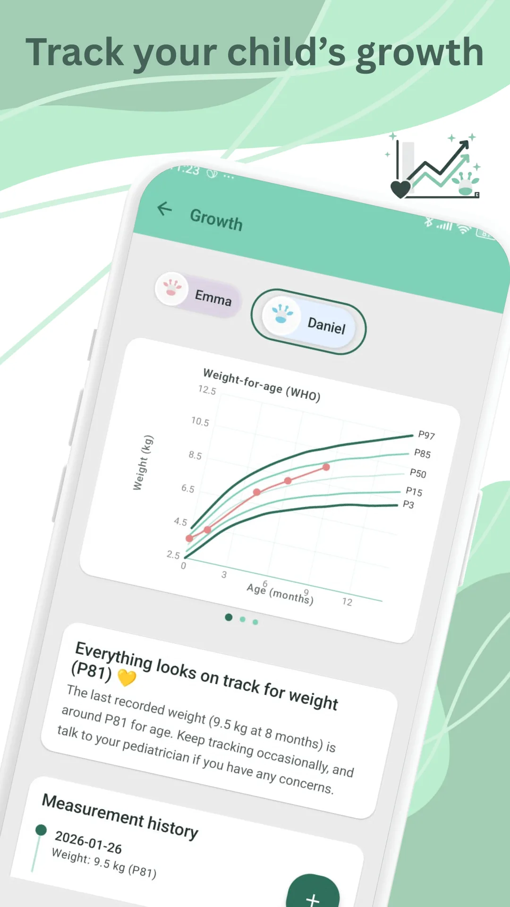

Sur cette page · 5 sections
En bref
Un percentile situe le poids ou la taille de votre bébé par rapport aux enfants du même âge et du même sexe ; ce qui compte n'est pas un chiffre isolé, mais la trajectoire de la courbe au fil des mesures. Un percentile bas ou élevé n'est ni bon ni mauvais en soi : parlez-en au pédiatre si la courbe change nettement de couloir.
Pourquoi c'est important
Comprenez les percentiles de croissance bébé et identifiez les situations à discuter avec le pédiatre.
Suivez tout dans Raffy
Sommeil, repas, croissance et routines dans une seule app Android gratuite.

Comment commencer cette semaine
- Mesurer dans des conditions comparables.
- Analyser plusieurs points avant de conclure.
- Relier les variations aux habitudes récentes.
Erreurs fréquentes à éviter
- Comparer les courbes entre bébés comme des notes.
- Surinterpréter une seule mesure.
- Ignorer une cassure durable de trajectoire.
Quand consulter le pédiatre
Sécurité pédiatrique
- Les symptômes deviennent plus marqués ou durent plusieurs jours.
- Le sommeil, l'hydratation ou le comportement changent brutalement.
- Vous avez besoin d'un plan individualisé validé par un professionnel.
Vous craignez que votre bébé ait changé de percentile à la baisse ? Nous vous expliquons quand s'inquiéter et quand ne pas s'inquiéter, avec des exemples de courbes normales et de courbes à faire vérifier.
Les progrès ne sont pas linéaires. Une routine réaliste et régulière fonctionne mieux qu'une stratégie parfaite.
Sources
- Assurance Maladie · ameli.fr7 examens de suivi médical entre les 3 mois et 18 mois de l'enfant
- American Academy of Pediatrics · HealthyChildren.org (en anglais)Understanding Growth Charts: A Parent's Guide to Percentiles & Z-Scores
- Organisation mondiale de la Santé (en anglais)Weight-for-age
Article vérifié à partir de ces sources le 26 oct. 2026. Contenu éducatif, pas un avis médical. Politique éditoriale